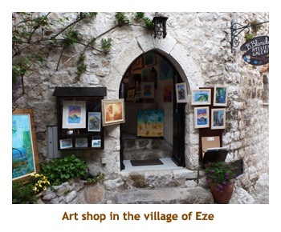

[ Home ] [ Travel ] [ Photography ] [ Pets ] [ Games] [ Rowing] [ Physics ]


Cruising on the Oceania Marina
Travel
Cruises
Past Cruises (Diaries)
Future Cruises
Rogues Galleries
Land Trips
Diaries (Land Trips)
Hawai'i - Big Island - 04'01
Hawai'i - Maui - 05'02
Hawai'i - Big Island - 04'03
Hawai'i - Kaua'i - 09'04
Hawai'i - Big Island - 04'06
Hawai'i - Maui - 04'06
Mainland China - 05'07
Phoenix, Arizona - 12'07
Greek Isles - 05'08
Hawai'i - Kaua'i - 09'08
Hawai'i - Big Island - 09'09
Hawai'i - Maui - 05'12
Hawai'i - Big Island - 04'13
Ireland - 08'13
Mexico - Cancun 11'13
France/Belgium/Lux 07'15
Hawai'i - Big Island - 05'17
England / Wales - 06'17
Hawai'i - Big Island - 09'19
Photography
Cameras
Underwater
Pets
Tara
Blackie
Whitey
Muffy
Ollie
Rusty
Fluffy
Rufus&Dufus
Games
Rowing
Physics
Rating (out of 5): Ship  Food
Service
Itinerary
Food
Service
Itinerary
We booked this cruise (and the one immediately after) for several reasons. Firstly, we liked Oceania from previous cruises and wanted to try out the new Marina. Secondly, there were some interesting new ports that we hadn't been to before. Thirdly, there were some ports that we had enjoyed before and really wanted to return to again. And, to make it even better, Dave & Joan had signed up to join us on the cruises. Because of all the trips we had booked for the year, we decided to fly in and out based on the sailing dates, so no extra days at either end. The Marina was wonderful - the only two complaints were that the buffet was entirely "they serve" and there was no promenade deck.
Note 1: In case you were wondering, we flew over Giglio Island twice and sailed by it twice, but never close enough to see the stranded Costa Concordia (or we didn't know where to look).
Note 2: For Christmas Marjorie had given me a new
underwater camera (Lumix). Unbeknowst to either of us, it came with built-in
GPS capabilities. The camera knows every country and city/town, and also
has a table of over 500,000 (!!!) famous sites, buildings, museums, plazas, statues, etc.
As you shoot the picture, it tells you where you are and names the historical
object you are photographing. I had a lot of fun with it on this trip!
Pre-Cruise and Day 1 (Apr 11,12) - Embarking in Civitavecchia
We dropped off our two new kittens (Rufous and Dufous) to Chrissy on the 10th. We were picked up at the house on the 11th by the shuttle at 9:00 AM. Our flight to Ottawa was at 10:30. We arrived in Ottawa at 4:45 PM and met Valerie and Dave there for a restaurant meal "get together". As we were standing in the corridor waiting for V&D, Joe Clark walked right by me! At 7:45 we continued our journey flying to Frankfurt. where we landed at 9:00 AM. Our final leg was to Rome at 10:30, and arriving at 12:30. We were met by the Oceania shuttle service and driven to Civitavecchia for 2:00 PM boarding. The check-in was very quick so we had to wait a bit until our room was ready at 3:00. We filled in the time by visiting the buffet.
Once in our room, we unloaded all of our stuff, filled the draws and the clothes
closet. Muster was at 5:15. After muster, we popped into the Cruise Critic meeting
to meet our private tour leaders. Dinner was at 6:30 and I had veal oscar. We
wandered the ship for a bit and then headed to bed at 9:00 PM for our first sleep
in two days.
Day 2 (Apr 13) - A day around Cannes
I took a sleeping pill and slept through to 7:30 AM. Woohoo! We had breakfast
in the buffet as we were anchoring in the bay off of Cannes. It was cloudy, coool and
wet outside. We caught the first tender (9:00 AM) and were on the dock by 9:30 for
our private tour with D&J and 2 other couples. The first leg of our tour was a drive
through Cannes. There is not much historic there, but we did go by the Film
Festival building complete with red carpet on the steps (the festival was the
following month). We didn't see any movie stars. Then we drove eastward
along the coast to Nice. We had been to Nice twice before, but it was great
to see it again. We walked through the flower market, but didn't buy anything
this time. Then we were off to the hilltop village of Eze. Again we had
been there before, but we really enjoyed walking through the narrow pathways
of the village. We had about an hour to explore.

We were picked up by the van for a short trip to the Fragonard outlet
where Marjorie bought some stuff. Nearby we stopped at a sandwich shop for
lunch. Then it was off through the mountains to the village of St. Paul de Vence.
We had done this village before, too, so we had some idea as to the route
through the village. At the cemetery, we looked for (and found) the grave of
Marc Chagall. Then it was time to head back to Cannes and the ship. We
reached the ship by about 5:00 PM. For dinner I had lobster - very good!
We played trivia at 8:30 with D&J and 2 other couples (won 6
BIG-O Points) . One of our
team mates (Paul) really knew his stuff!
Then we went to bed.
Day 3 (Apr 14) - The highlife in Monaco
We arrived at Monaco about 8:00 AM, almost 90 miles from Cannes. The captain must have sailed
back and forth a few times to use up the time! It was pouring rain. This was our second time to Monaco
(previous time from Villefranche) and we had booked an afternoon tour. We had breakfast with D&J
and then headed off on our own for the morning. We decided to walk to the Oceanographic Museum (fancy word for aquarium)
that was linked to the Jaques Cousteau Foundation. We got a bit lost and walked through a "no predestrians"
tunnel but finally found the building. The aquarium was quite good and we ran into D&J who were also
exploring on their own. Small world.
The displays were mainly salt water fish from the Mediterranean. I didn't realize that so many of the
tropical fish that we see in Hawai'i and the Caribbean were also represented in the
Mediterranean Ocean. We spent about 1.5 hours at the aquarium.
On the way back from the OM we hiked down through an old fortification. We were back to the ship about
11:15 and then dried off and headed to the buffet for lunch.
Our afternoon tour was at 1:15. We boarded a bus for a tour of the city, The first stop was at the huge
Cathedral of the Immaculate Conception. All of the past Monaco Royalty were buried here including
Prince Ranier II and Princess Grace (who were married here as well).
Grace is the only person buried here who is not a decendant of the Grimaldi family. Then we drove to the
OM (where we had been in the morning) and did a walking tour of the old city. We ended at
the Royal Palace (the residence of Prince Albert II) and wandered around the outside.
We did not enter the palace. Back at the bus, we
reboarded and drove to the famous Monte Carlo Casino. There were lots of $$$$ cars in the
area including a beautiful Bentley and a roaring red Ferrari. My Honda Accord would have looked out
of place! The plaza in front of the casino was decorated for the Monte Carlo Masters tennis event, with a huge tennis
raquet and large tennis balls on the lamp standards. (Oh yes, we were just a few days early and missed the
F1 race as well. They were setting up for it.) We were givien some time to explore the area, so we
went into the lobby of the casino. We weren't properly dressed or willing to spend the 10 Euros to
look inside the casino. The lobby was very elegant. After we exited the casino we once again bumped
into D&J. That's how small Monaco is! Then it was time to head back to the ship.
We were back to the ship in time for afternoon trivia (more BIG-O Points) .
For dinner we did our first specialty restaurant - the Polo Grill. It was very good. I had a rack of lamb. Yummy!
Afterwards we played the evening trivia. Our team was doing pretty well. Then, off to bed.
Day 4 (Apr 15) - Stopping in Livorno
This would be our second time in Livorno. Having done Florence and Pisa
on an earlier trip, we decided to do Siena and San Gimignano this time.
The weather today was a bit better - some cloud but some blue sky and
sun as well. We had breakfast and headed off on our tour at 8:30. It was
about 1.5 hours driving to Siena. Along the way it poured in rain, but
stopped before we got to Siena. The drive through the orchards and vinyards
of Chianti was very interesting. After parking on the outskirts of town,
we walked to the Basilica of San Domenico. Building was started
in the 12th C and finished in the 14th C. Then we walked through the narrow
streets of Siena to the Duomo di Siena. Because it was Sunday,
we did not enter the Duomo. Then we entered the large Piazza del Campo
where the biannual horse races are held. The city consists of 17 districts and
twice a year 10 of them are drawn to compete in the race. We had lunch (pizza)
at a restaurant bordering on the Piazza. Then we walked
back to the bus parking lot to continue our tour.
We drove about 1/2 an hour and arrived at the little town of San Gimignano. During medieval times it was popular for the rich families to build towers. This town has many and is known as the city of towers. We parked just outside the city wall and entered the city through the main gate. We walked through a shopping area to the Plazzo del Popolo. we were surrounded by medieval buildings with large towers. One impressive building was the Governor's Palace. We continued walking up a hill to the remains of a hilltop fortification (Montestaffoli Fortress) where there was a wonderful view of the surrounding town and countryside. Inside the fortress grounds a couple of buskers were setting up - a woman on a harp and a guy orating in Italian (I presume). We hiked back down into the main part of the town and were given a about an hour to wander through the shopping area. Lots of souvenir, ceramic and art shops.The guide had pointed out a small gelato shop with the "best gelato in the world". Marjorie braved the lineup and got a serving of chocolate gelato. I tried some and it was the creamiest and chocolatiest gelato I have ever tasted. Yummm!
Then it was back to the bus for the drive home. It was just over an hour
to the ship and we arrived at 8:15 PM. Along the way our guide sang us an
Italian song ("Volare"), and then our Oceania rep (who was one of the ship's singer/dancers)
sang "Over the Rainbow". She was very good. We did the buffet for dinner as we were too
late for the dining room.
Day 5 (Apr 16) - First time to Olbia (Sardenia)
This was our first new port of the cruise. We had never been to the island of Sardinia before. However, instead of porting at Cagliari, we were at the small town of Olbia. Researching the port before the cruise, the only tourist thing there was the Smeralda Coast with it's fancy hotels and million $ houses. D&J did a bus tour of this area but we decided to take a day off from touring and just walk around on our own.
We docked at 8:00 AM at Olbia. The weather was cloudy patches with warm sunny periods.
We caught a shuttle for the short trip into the town center
(5 minutes?). We found an
internet cafe and caught up on our email. Then we walked to a 13th C church,
the Basilica of San Simplicio. Wandering in the sun was such a delight after our days of rain and cool.
We found the local grocery store and bought some beer (Moretti and Peroni) to take back to the ship.
We shuttled back to the ship and had a buffet lunch. In the afternoon we lazed around the ship
taking in a shuffleboard competition and afternoon trivia. We scooped up some more
BIG-O Points. We did dinner at the Red Ginger where I had
a rack of lamb with a wasabi coating. Then it was evening trivia and off to bed.
Day 6 (Apr 17) - Diverted to Naples
For today, we had planned to tour on our own. We were supposed to tender at Amalfi, catch the ferry to
Positano, spend some time in Positano, return to Amalfi by ferry and then spend some time in Amalfi.
However, yesterday it was determined that the seas would be too rough today for tendering, so the
captain instead diverted us to Naples. Not wanting to just walk around Naples, we latched on to a
ship's tour to Herculaneum. We had done Pompeii before and had heard great things about Herculaneum.
The day was dark, cloudy and rainy. We boarded the bus at 8:45 and headed off down the coast. We
were stopped by a traffic accident and sat for maybe 1/2 hour in heavy traffic. We finally got to Herculaneum
by about 10:30. It was pouring with rain. Our tour through the remains of the Roman city was very wet, but we still
enjoyed seeing the site. It was quite different that Pompeii in that it was covered in lava rather than ash.
As a result, the buildings were in better shape and more complete than those of Pompeii. On the other
hand Herculaneum is much smaller than Pompeii.
After seeing most of the ancient city, we reboarded the tour bus. We drove to a cameo factory (part of the tour that we hadn't been aware of). We're not usually excited about shopping visits, but I must admit that the cameo carving on sea shells was very interesting. The showroom included beautiful cameo necklaces priced at $50,000 to $60,000. Not for us!
Finally we resumed our trip back to the ship. No accidents were blocking our way this time. We arrived at the ship about 2:00 PM. We hustled up to the buffet before it closed and had pizza and milkshakes. Afterwards we did the shuffleboard tournament and afternoon trivia. Then Dave and I shared some of the beer I had brought aboard yesterday. For dinner we went to Jacques, and I had yummy scallops. Then it was off to evening trivia where we won some more BIG-O Points. Bed time!
Weather Note: The guide today told us that March had been the
warmest and driest on record since 1900 (or so). However, April was turning
out to be the coolest and rainiest ever seen. We certainly picked the
right time to come to Europe!
Day 7 (Apr 18) - Taormina, Sicily and the volcano

This morning we almost slept in - we were up at 7:20 for an 8:00 AM excursion! It was forecast to be rainy day, but turned out to be partly cloudy in the morning and then full sun in afternoon. It was a wonderful day. We had a quick breakfast as the ship anchored off of the village of Naxos. Then we tendered to the local dock to join a private tour. Our van was waiting as the 8 of us gathered on the dock. Our tour was supposed to do Mt. Etna first and then tour the village of Taormina. However, as it had rained through the night, it was snowing on the mountain and the road was closed for snow removal. So, we did the tour in the opposite order.
The bus took us up past Taormina to the hilltop village of Castelomola. There we
walked around the village center and hiked up to the remains of the castle. After reboarding
the bus we drove back to Taormina and had an hour to wander around. It was
blue sky and sunshine by this time. We walked to the
ancient Roman theatre and then browsed the souvenir shops to buy some house number
tiles. During our ramblings we ran into D&J who had come by private taxi. Instead of grabbing
lunch I settled for a gelato treat.
Then it was time to head off to Mt. Etna. We drove through the countryside and up the
mountain to about 1300 meters. That was as far as the road went. It was still sunny out,
but very cold (due to the elevation) and windy. We had planned to take the gondola
ride further up the mountain, but it was closed due to the wind. We stopped at two different
spots where we wandered around. The view was wonderful. After about an hour we
reboarded the bus and drove back towards Naxos. We stopped part way at a honey /
olive oil place that had sampling rooms for honey, olive oil and wine. Marjorie bought
some specialty olive oils for the kids. Then it was back to the ship. We arrived at the
dock about 4:30. It had been a wonderful tour.
We tendered back to the ship. The ship sailed at 6:00 and we were booked into Toscana for
6:30. I had a pasta dish that was very good! We finished in time for evening trivia and then headed to bed.
Day 8 (Apr 19) - The island of Corfu
Last night we set the clocks ahead one hour, so we were up at 9:00!!
The ship was docking in Corfu about 10:00 and our tour was in the afternoon.
We had visited Corfu a couple of years ago and had done a whole island
tour, except for the Achillion Palace. This time we planned to see the
palace. We had breakfast, and then went out to enjoy sunny warm day. We
played in a croquet tourny - just Marjorie, Dave and me. Dave won. We
had lunch and then headed off to the 12:45 tour. We drove south from Corfu
Town to the Achilleon Palace. We wandered the grounds for a bit and then
entered the palace for a tour of the insides. The palace was built for
the Empress of Austria ("Sissy") and was very ornate. After a bit more
time wandering the gardens outside (where it rained for a minute or two),
we boarded the bus to continue the tour.

The second part of the tour was a walking tour of old Corfu town. We walked up and down
several streets and ended up at a beautifuo cathedral. At this time the tour ended and we were
given some time to enjoy the town. We found a grocery store and bought some beer and Milko (Marjorie's
favorite Greek chocolate milk). By this time the weather turned foul - raining and very cool.
It was unusual weather for this time of year. We walked back to the bus to await our return to the ship.
We were back to ship by 5:00 PM. As we carded in, I checked the computer screen and there were1,233
passengers on the cruise. For dinner I had roast beef and Yorkshire pudding. We played
evening trivia - 2nd place! We were on a made up team as our regular teammates were
dining late. Then we went to a pianist / singer husband & wife team. They were OK, but we
left early because it was quite loud and we didn't really enjoy the music.
Day 9 (Apr 20) - Outskirts of Dubrovnik
We arrived in Dubrovnik today at 8:00 and it was raining. Yuck! The weather forecast was not good.
This was our fourth visit to Dubrovnik, so we decided to just stay close to the ship. We headed out for a
walk on the dock. Just behind us was the largest private yacht I have ever seen. It was accompanied
by another ship that was box shaped. I talked to a couple of the crew members, and it turned out to be
the personal yacht of Qaboos bi Sa'id, the Shah of Oman. The boxy ship was home to his entourage,
his automobiles and a helicopter. All the comforts of home. After viewing the yacht up close, we walked
to a huge new grocery store to check things out. Back on the ship the clouds cleared, then
sunshine for the rest of the day! D&J were off on a tour, so we played mini-golf followed by croquet for
BIG-O Points. We had lunch (pizza and a milkshake) and then watched
the sailaway at 2:00 PM. Later we played shuffleboard and then did afternoon trivia. Who says cruises
are not exhausting? I can't remember what I had for dinner. At evening trivia we got second place.
Days 10, 11 (Apr 21, 22) - Two days in Venice
Day 10: This cruise ended on an overnight in Venice, and the next
leg opened with an overnight in Venice. I'll describe what we did for
the first day and a half, then continue the journey in the next diary.
We arrived in Venice at about 8:00 AM as we finished breakfast. It was
overcast, but was still a magnificent sailby of a beautiful city. We sailed
the length of the city (south side) to the commercial docking area. The
height of the upper deck afforded us a birds eye view - looking over the
rooftops. Once docked, we headed off to explore Tronchetto Island. We
were contemplating doing a Viator tour into the Veneto (for the next day)
and wanted to see where we had to meet the bus. We really weren't comfortable
that we knew where the bus departed from, so decided to skip the tour.
By this time is was getting warm and sunny, so we wandered back to the
ship for lunch. Afterwards I changed into my shorts and we walked over
the bridge to the Piazzale Roma, where there was an Internet cafe. It
was so nice out then we walked over to San Basilio (where we had docked
on an earlier cruise) and then back to ship. We had been walking for abour
2.5 hours!
We were back in time for afternoon trivia. We won some extra points for being the winningest team throughout the cruise. Then it was time to cash in our BIG-O Points for a t-shirt and an Oceania umbrella. We saved some unused points for the next leg of the cruise. For dinner we went to Toscana (again). I had the osso buco and it was delicious. There was no evening trivia tonight.
Day 11: Today was a "turnaround" day. Most of the passengers would
be leaving the ship to be replaced by another group for the next cruise.
We booked the two cruises at different times, so couldn't get the same
cabin for both legs. So, we had breakfast and then stuffed all of our
clothes into our suitcases. We had to wait a bit until our new cabin was
ready, but about 10:30 we were able to roll our bags to our new room and
hang stuff up again. We had an early lunch (milkshake and pizza) and then
headed out into the city for a walk with D&J.
It was a short walk from the dock to the People Mover. This was a short distance of overhead railway that took us to the Piazalle Roma. There, we hopped on the vaporetto to S.Marco. While waiting for the ferry it rained a bit then then hailed! However, the rain didn't last long. It was several stops along the Grand Canal before we arrived at the famous San Marco square. It was Sunday so the basillica was closed for service. We walked to the Academia bridge then to Ca' Rezzonico. This is a restored palace that is open to the public. The palace was filled with marvelous paintings. We spent an hour or so touring the 3 stories of restored rooms. It was sunny by now. As we walked back tpwards the dockyard, we stopped at an old hall that featured a musical instrument museum. There were examples of instruments (mostly stringed) from all of the famous instrument makers. What a fabulous display! We walked back to ship by 4:00 PM. Most of the new group of passengers had boarded by now. Note: As on past B2B cruises, we had that strange feeling that our ship of familiar friendly faces had become a ship of strangers! We had dinner at Red Ginger. I had beef teriyaki.
The rest of our B2B cruise is documented in
another diary.